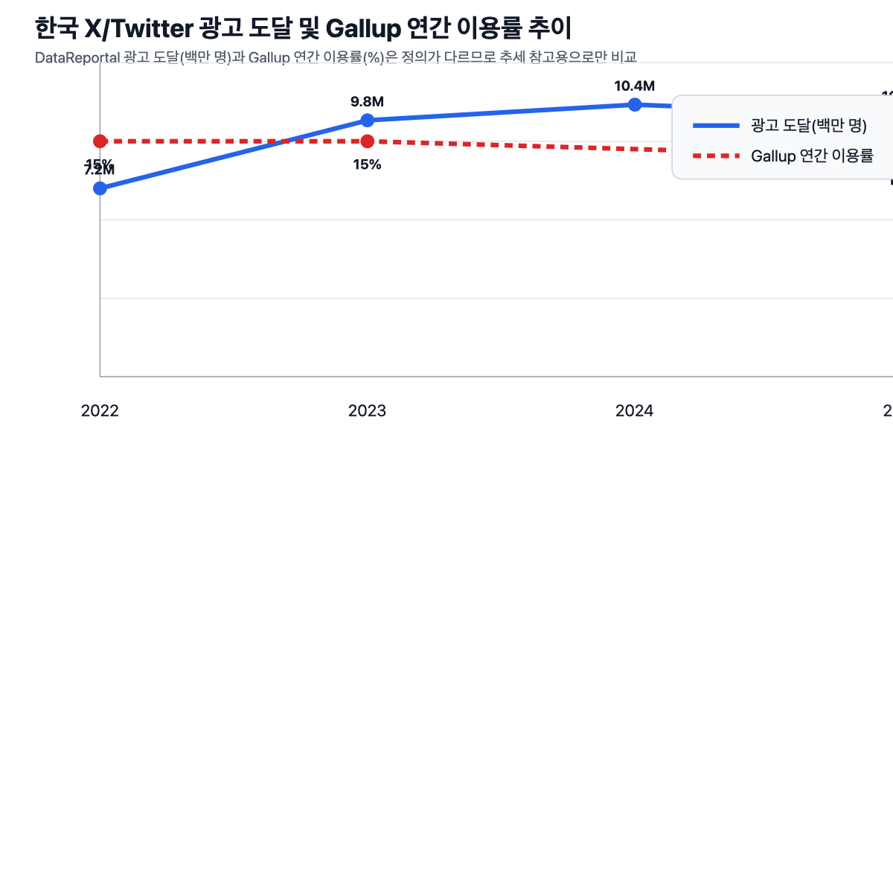
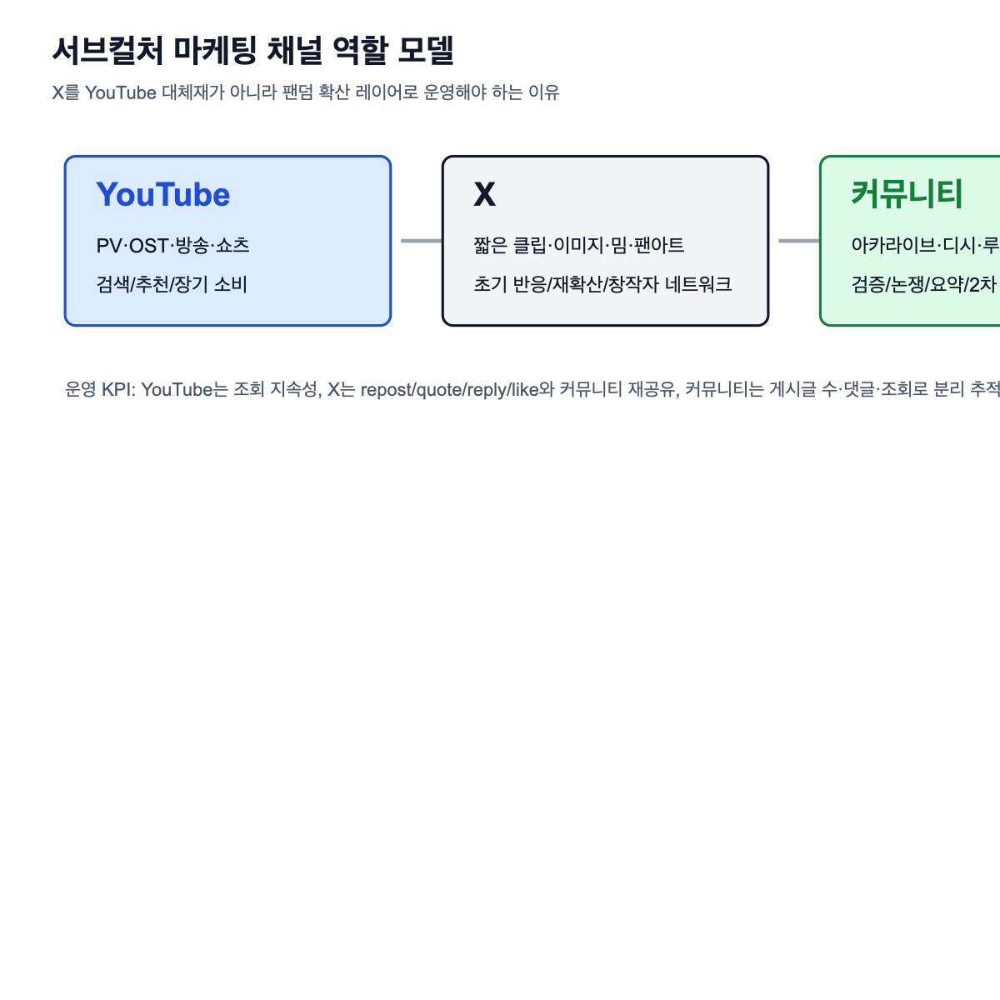
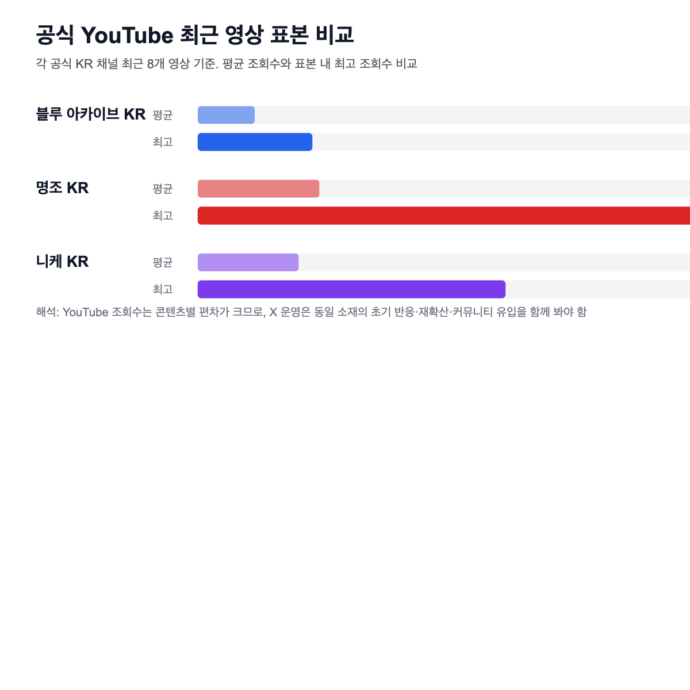
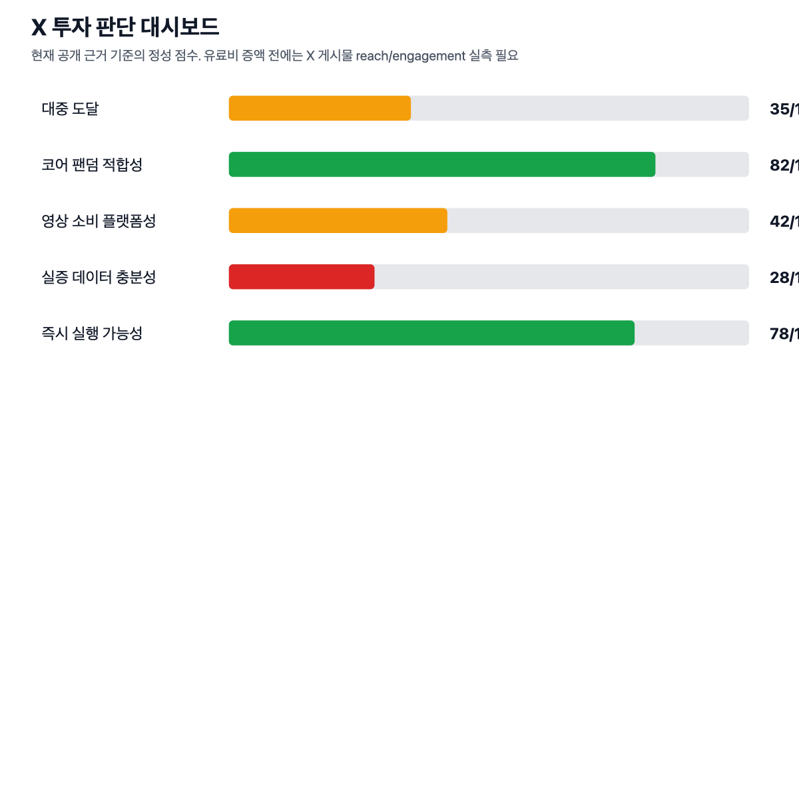

한국 X 이용 트렌드와 서브컬처 마케팅 적합성 조사 v0.5
v0.5 X 캡처 반영판 · 2026-05-17 · BigSubClaw
1. 핵심 결론
| 질문 | 답 |
|---|---|
| X를 한국 대중 도달 플랫폼으로 봐야 하는가 | 아니오. YouTube 대비 도달 규모가 작고 Gallup 이용률도 정체권이다. |
| X를 서브컬처 팬덤 운영 채널로 봐야 하는가 | 예. 공식 정보, 팬아트, 실시간 반응, 커뮤니티 재확산이 연결된다. |
| 지금 X 유료 매체비를 크게 늘릴 근거가 있는가 | 아직 부족하다. 게시물 reach, repost, quote, link click, 커뮤니티 인용 데이터가 더 필요하다. |
| 실무 권장안 | YouTube는 영상 허브, X는 팬덤 반응 증폭, 커뮤니티는 확산 검증 레이어로 분리 운영한다. |
| v0.5 변경 방향 | 장문 서술 축소 유지, X 공식 게시물 캡처 3건의 reach/engagement 수치 반영. |
2. X 한국 이용 추세

2.1 DataReportal 기준 X 광고 도달 추이
| 연도 | 플랫폼 표기 | 한국 X/Twitter 광고 도달 | 인구 대비 | 전년 대비 | 해석 |
|---|---|---|---|---|---|
| 2022 | 720만 | 14.0% | - | 낮은 대중 침투율 | |
| 2023 | 980만 | 18.9% | +36.1% | 광고 도달 기준 반등 | |
| 2024 | X | 1,040만 | 20.1% | +6.1% | 1,000만 전후로 확장 |
| 2025 | X | 1,000만 | 19.4% | -3.8% | 고성장보다는 정체권 |
2.2 Gallup 기준 X 이용률 추이
| 연도 | 연간 이용률 | 월간 이용률 | 비교 포인트 |
|---|---|---|---|
| 2022 | 15% | 5% | 선택적 SNS 성격 |
| 2023 | 15% | 미확인 | 전년과 유사 |
| 2025 | 14% | 4% | 월간 활성층은 좁음 |
2.3 추세 판단
| 관찰 | 판단 |
|---|---|
| DataReportal 광고 도달은 2022년 720만에서 2024년 1,040만까지 증가 후 2025년 1,000만 수준 | 광고 타깃 풀은 1,000만 전후에서 움직이는 정체권으로 해석 |
| Gallup 연간 이용률은 2022~2025년 14~15% 수준 | 대중 플랫폼으로 폭발 성장 중이라고 보기 어려움 |
| Gallup 월간 이용률은 2022년 5%, 2025년 4% | 일상 고빈도 이용자층은 제한적 |
| 서브컬처 팬덤은 평균 이용자보다 발화·창작·인용 밀도가 중요 | 전체 침투율보다 코어 팬덤 내 역할을 봐야 함 |
3. 플랫폼 역할 매트릭스

| 역할 | YouTube | X | 커뮤니티 |
|---|---|---|---|
| 공식 영상 보관 | 높음 | 낮음 | 낮음 |
| 검색·추천 누적 | 높음 | 낮음~중간 | 중간 |
| 공개 직후 반응 | 중간 | 높음 | 높음 |
| 팬아트·밈 확산 | 낮음~중간 | 높음 | 높음 |
| 링크 재가공 | 중간 | 높음 | 높음 |
| 장기 KPI | 조회수, 시청 지속 시간, 검색 유입 | repost, quote, reply, link click | 게시글 수, 조회수, 댓글, 인기글 |
4. 3개 타이틀 YouTube 표본

최근 8개 공식 KR YouTube 영상 표본 기준이다. 표본 크기가 작으므로 채널 전체 성과가 아니라 최근 운영 신호로 해석한다.
| 타이틀 | 구독자 | 평균 조회수 | 중앙값 | 최고 영상 | 최고 조회수 |
|---|---|---|---|---|---|
| 블루 아카이브 KR | 237,000 | 17,930 | 13,958 | 붉은겨울 OST 리믹스 앨범 플레이리스트 | 35,989 |
| 명조 KR | 123,000 | 38,232 | 26,571 | 사이버펑크: 엣지러너 콜라보 예고 | 157,870 |
| 니케 KR | 83,500 | 31,714 | 23,502 | BE MY STAR Stage Full Ver. | 96,607 |
4.1 표본 해석
| 관찰 | 실무 의미 |
|---|---|
| 구독자 수와 최근 평균 조회수 순위가 일치하지 않음 | 소재 강도와 공개 타이밍이 성과를 크게 좌우 |
| 콜라보·음악·캐릭터 중심 콘텐츠가 표본 내 상위권 | X 컷다운도 같은 소재를 우선 활용해야 함 |
| YouTube 조회수만으로 팬덤 확산을 판단하기 어려움 | X 반응과 커뮤니티 인용 데이터를 함께 봐야 함 |
5. YouTube-X 미러 게시물 실측
사용자 제공 X 캡처 3건을 기준으로 공식 X 게시물의 공개 view와 참여 지표를 반영했다. X view는 YouTube 조회수와 정의가 다르므로 “영상 시청 수”가 아니라 게시물 도달/노출성 지표로 해석한다.
| 타이틀 | YouTube 대표 영상 | 공식 X 계정 | X 게시 시각 | X view/reach | replies | reposts | likes | bookmarks |
|---|---|---|---|---|---|---|---|---|
| 블루 아카이브 | 제가 증거할 저의 이름은, 말쿠트. | @KR_BlueArchive | 2026-05-16 12:00 | 34,000 | 2 | 293 | 909 | 124 |
| 명조 | 공명자 전투 모션 - 데니아 | @WW_KR_Official | 2026-05-17 12:00 | 66,000 | 1 | 312 | 669 | 36 |
| 니케 | BE MY STAR Stage Full Ver. | @NIKKE_kr | 2026-05-04 12:00 | 24,000 | 2 | 178 | 685 | 73 |
5.1 YouTube-X 비교
| 타이틀 | YouTube 조회수 | X view/reach | X/YouTube 비율 | X 참여 합계 | X 참여율 |
|---|---|---|---|---|---|
| 블루 아카이브 | 11,721 | 34,000 | 2.90x | 1,328 | 3.91% |
| 명조 | 26,194 | 66,000 | 2.52x | 1,018 | 1.54% |
| 니케 | 96,607 | 24,000 | 0.25x | 938 | 3.91% |
5.2 해석
| 관찰 | 판단 |
|---|---|
| 블루 아카이브와 명조는 X view가 YouTube 조회수보다 약 2.5~2.9배 큼 | X가 공식 영상의 초기 도달/공지 확산 레이어로 작동한 사례 |
| 니케는 YouTube 조회수가 X view보다 약 4배 큼 | 음악·스테이지형 콘텐츠는 YouTube 소비가 더 강하게 작동한 사례 |
| 블루 아카이브와 니케의 X 참여율은 약 3.9%, 명조는 약 1.5% | view 규모와 참여 밀도는 별개로 봐야 함 |
| 세 게시물 모두 repost가 178~312건 발생 | 단순 노출뿐 아니라 팬덤 재전달이 확인됨 |
| quote 수와 link click은 캡처상 미확인 | 관리자 지표 또는 추가 캡처가 있으면 투자 판단 정확도 상승 |
6. 커뮤니티 확산 증거
| 타이틀 | 커뮤니티 증거 | 규모/반응 | 의미 |
|---|---|---|---|
| 블루 아카이브 | 아카라이브에 공식 Twitter/X 디지털 굿즈 인증샷 이벤트 공유 | 채널 111,649명, 게시글 조회 1,110, 댓글 1 | X 이벤트가 팬덤 커뮤니티로 재배포됨 |
| 명조 | 아카라이브에 글로벌·개발팀·한국·일본 공식 X 계정 일람 정리 | 채널 65,292명, 게시글 조회 1,317, 댓글 9 | X가 공식 정보 추적 인프라로 인식됨 |
| 니케 | 아카라이브에 X 로그인 관련 공식 안내 공유 | 채널 76,903명, 게시글 조회 2,331, 댓글 9 | X가 마케팅뿐 아니라 서비스 공지 접점으로도 작동 |
7. 투자 판단 대시보드

| 항목 | 현재 점수 | 근거 | 코멘트 |
|---|---|---|---|
| 대중 도달 | 낮음 | X 광고 도달 1,000만 전후, Gallup 월간 4% | YouTube 대체 불가 |
| 코어 팬덤 적합성 | 높음 | 공식 정보, 팬아트, 실시간 반응, 커뮤니티 인용 | 서브컬처 운영 채널로 필요 |
| 영상 소비 플랫폼성 | 낮음~중간 | YouTube가 조회·검색·추천 본진 | X에는 컷다운/이미지/스레드 최적화 |
| 실증 데이터 충분성 | 중간 | 공식 X 게시물 캡처 3건으로 reach/참여 수치 확보 | quote, link click, 관리자 impression은 추가 필요 |
| 즉시 실행 가능성 | 높음 | 운영 체계·소재 제작은 바로 설계 가능 | 유료비보다 운영/소재 우선 |
8. 운영 권장안
| 영역 | 권장 |
|---|---|
| 기본 운영 | 공지 링크만 올리지 말고 이미지, 짧은 클립, 요약 카드, 해시태그를 기본 세트화 |
| 캠페인 운영 | 출시·업데이트·콜라보·신규 캐릭터 공개 전후 24~72시간 집중 운영 |
| 소재 제작 | YouTube 본편 제작 시 6초/15초/20초 X 컷다운을 동시에 산출 |
| 팬덤 반응 | 팬아트 리액션, 공식 리포스트 기준, quote 모니터링 기준 사전 정의 |
| 유료 집행 | X 단독 대규모 집행은 보류. 게시물 부스팅·리타게팅·소액 테스트부터 |
| 리포팅 | YouTube, X, 커뮤니티를 한 캠페인 단위로 묶어 비교 |
9. 증액/축소 조건
| 판단 | 조건 |
|---|---|
| 증액 | 공개 후 24~72시간 내 X repost/quote가 평시 대비 상승 |
| 증액 | X 게시물이 커뮤니티 인기글·공지·밈 게시글로 재확산 |
| 증액 | X 링크 클릭/UTM이 YouTube 조회, 이벤트 참여, 사전예약에 기여 |
| 증액 | 팬아트·해시태그 UGC가 반복적으로 발생 |
| 축소 | view만 높고 repost/quote/reply가 낮음 |
| 축소 | X 게시물이 커뮤니티로 거의 재공유되지 않음 |
| 축소 | X용 네이티브 소재 없이 YouTube 링크만 반복 |
| 축소 | 운영 승인 속도가 느려 실시간 반응을 놓침 |
10. 추가 조사 체크리스트
| 우선순위 | 항목 | 필요성 |
|---|---|---|
| 1 | quote 수와 게시물 URL 원문 추가 확보 | 공개 캡처에서 quote 수는 미확인 |
| 1 | X 관리자 impression/link click/UTM 확보 | reach와 전환 기여도 비교 |
| 1 | 게시 시각과 YouTube 업로드 시각 비교 | 동시 배포/후속 배포 여부 확인 |
| 2 | 아카라이브·디시·루리웹의 링크 인용 게시글 수집 | 커뮤니티 재확산 검증 |
| 2 | 24h/72h/7d 변화 추적 | 캠페인 초기 반응과 지속성 분리 |
| 3 | UTM/link click 또는 관리자 impression 확보 | 유료 집행 판단 근거 |
11. 결론
| 최종 판단 | 내용 |
|---|---|
| X의 위치 | 대중 영상 플랫폼이 아니라 코어 팬덤 증폭 레이어 |
| YouTube의 위치 | 공식 영상 허브와 장기 검색·추천 본진 |
| 커뮤니티의 위치 | X/YouTube 소재가 팬덤 담론으로 바뀌는지 확인하는 검증 레이어 |
| 현재 투자안 | 표준 운영 + 캠페인 펄스형 강화 |
| 보류할 것 | X 단독 대규모 유료 집행 |
| 바로 할 것 | X용 컷다운 소재, 공식 리액션 기준, YouTube-X-커뮤니티 통합 리포트 템플릿 구축 |
12. 참고 출처
- DataReportal, Digital 2022: South Korea: https://datareportal.com/reports/digital-2022-south-korea
- DataReportal, Digital 2023: South Korea: https://datareportal.com/reports/digital-2023-south-korea
- DataReportal, Digital 2024: South Korea: https://datareportal.com/reports/digital-2024-south-korea
- DataReportal, Digital 2025: South Korea: https://datareportal.com/reports/digital-2025-south-korea
- Gallup Korea, 마켓70 2025 (2) 미디어·콘텐츠·소셜 네트워크 서비스 18종: https://www.gallup.co.kr/gallupdb/reportContent.asp?seqNo=1586
- Gallup Korea, 마켓70 2023: https://www.gallup.co.kr/gallupdb/reportContent.asp?seqNo=1430
- Gallup Korea, 마켓70 2022: https://www.gallup.co.kr/gallupdb/reportContent.asp?seqNo=1323
- Google YouTube Help, How engagement metrics are counted: https://support.google.com/youtube/answer/2991785
- Byline Network, X Korea mMAU/mDAU comments from MGS 2024: https://byline.network/2024/08/1-1261/
- Arca Blue Archive, 트위터 디지털 굿즈 인증샷 이벤트: https://arca.live/b/bluearchive/73857557
- Arca Wuthering Waves, 공식 트위터 일람: https://arca.live/b/wutheringwaves/72210303
- Arca NIKKE, X 로그인 관련 안내: https://arca.live/b/nikketgv/154042434
- Blue Archive KR YouTube: https://www.youtube.com/@bluearchive_kr
- Wuthering Waves KR YouTube: https://www.youtube.com/@WW_KR_Official
- NIKKE KR YouTube: https://www.youtube.com/@nikkekr